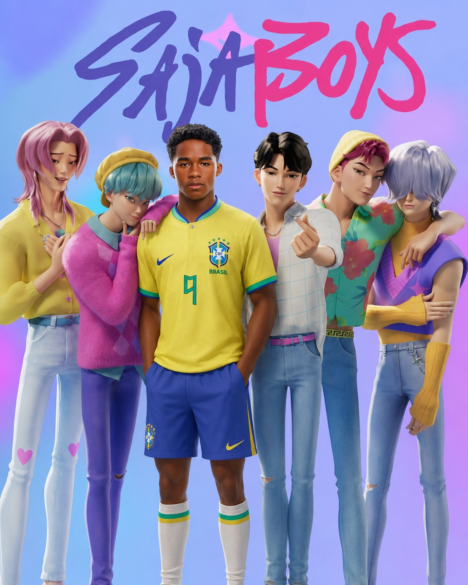
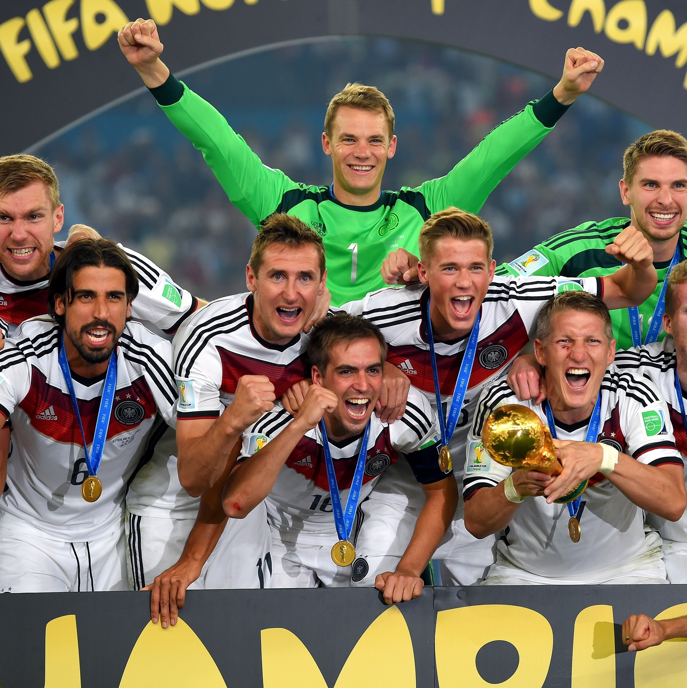

novo idol no pedaço
Por: Cecília
.
Aqui tem tanta desinformação quer você vai achar que está num grupo de whats

Por: Cecília
.
Por: Clara
O Norueguês tem assustado mais crianças do que Gustavo Lima. Conspiracionistas dizem que Haaland é o primeiro jogador de futebol criado em laboratório.

Por: Clara
Alemanha volta para as finais igual repescagem do BBB e ganha do Brasil de 7x1 denovo!!!!! Vini Jr chora e Neymar aproveita para divulgar tigrinho no meio do campo